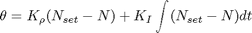
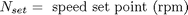
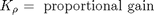
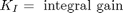
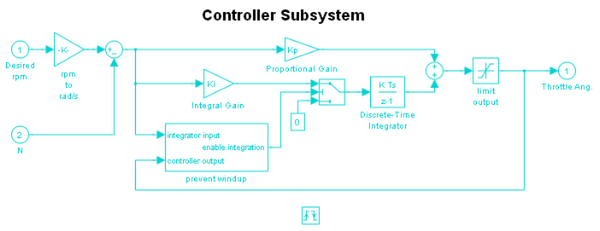
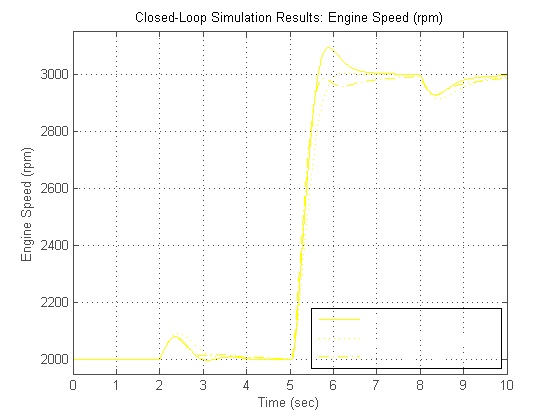

閉ループ制御を使ったエンジン タイミング モデル
このモデル (sldemo_enginewc.mdl) は、開ループ エンジン モデル (「Triggered Subsystem を使ったエンジン タイミングのモデル化」デモで説明されている sldemo_engine.mdl) の拡張バージョンです。このモデル sldemo_enginewc.mdl は閉ループを含んでおり、Simulink® モデルの柔軟性と拡張性を実証します。この拡張モデルでは、コントローラーの目的は、負荷トルクの変化の影響が最小限に抑えられるように、高速スロットル アクチュエータでエンジン速度を調節することです。これは、エンジン モデルに離散時間 PI コントローラーを追加することによって、Simulink で簡単に実装できます。
目次
閉ループ モデル
比例積分 (PI) 制御を使用する制御則を選択しました。動作点が変化したときに定常状態スロットルを調整するために積分器が必要であり、比例項が、積分器によって生じた位相遅れを補償します。
- メモ:開ループ エンジン モデルを参照してください (このモデルは、開ループ モデルの拡張バージョンです)。
方程式 1




シミュレーションを開いて実行
このモデルを開くには、MATLAB® 端末に sldemo_enginewc と入力します (MATLAB ヘルプを使用している場合は、ハイパーリンクをクリックします)。モデル ツール バーの [再生] ボタンを押してシミュレーションを実行してください。
- メモ:このモデルは、MATLAB ワークスペースの sldemo_enginewc_output という構造体に関連データのログを作成します。ログを作成する信号は青色のインジケーターを持ちます (モデルを参照)。信号ログの詳細は、Simulink ヘルプを参照してください。
図 1: 閉ループ エンジン モデルとシミュレーション結果
このモデルでは、マイクロプロセッサー実装に適した離散時間コントローラーを使用します。方程式 1 の積分項は、離散時間近似で実装されなければなりません。業界で一般的であるように、コントローラーの実行は、エンジンのクランクシャフトの回転と同期化されます。コントローラーは、上述のバルブ タイミング信号によってトリガーされる Triggered Subsystem に組み込まれます。
Controller サブシステムの詳細な構造を図 2 に示します。注目すべき点は、Discrete-Time Integrator ブロックを、そのサンプル時間パラメーターを (内部的に) -1 に設定して使用することです。これは、ブロックがそのサンプル時間を継承することを示しています。この場合、サブシステムがトリガーされるたびに実行されます。これを Triggered Subsystem にする重要なコンポーネントは、図 2 の下部に示す Trigger ブロックです。任意のサブシステムを Triggered Subsystem に変換するには、Simulink Connections ライブラリからサブシステム ブロック線図にこのブロックのコピーをドラッグします。
図 2: 速度コントローラー サブシステム
結果
一般的なシミュレーション結果を図 3 に示します。速度設定点は、t = 5 秒で 2000 rpm から 3000 rpm に進みます。トルクの外乱は、sldemo_engine.mdl 開ループ モデルで使用されるものと同じです (他のエンジン モデルを開く)。定常偏差が 0 の、迅速な過渡応答に注目してください。代替コントローラー調整 (Ki および Kp) が示されています。ユーザーは MATLAB コマンド ラインでこれらを調整できます。これにより、エンジニアはパラメーター変動の相対的影響を理解できます。
図 3: 一般的なシミュレーション結果
モデルを閉じる
モデルを閉じます。ログが作成されたデータをクリアします。
まとめ
ここで説明したエンジン モデルなど、非線形の複雑なシステムをモデル化する機能は、Simulink の重要な機能の 1 つです。シミュレーション能力は、前述のモデルの提示において明白です。Simulink は、正確なタイミングのシリンダー吸気イベントも含めて、このタイプのモデルを作成する上で重要である、モデルの忠実性を保ちます。完全な速度制御システムが Simulink の柔軟性を実証しています。特に、Simulink モデル化方法では、割り込み駆動エンジン速度コントローラーのラピッド プロトタイピングが可能です。
- メモ:開ループ エンジン モデルを参照してください (このモデルは、開ループ モデルの拡張バージョンです)。
参照
[1] P.R. Crossley and J.A. Cook, IEEE® International Conference ‘Control 91’, Conference Publication 332, vol. 2, pp.921-925, 25-28 March, 1991, Edinburgh, U.K.
[2] The Simulink Model.Developed by Ken Butts, Ford Motor Company®.Modified by Paul Barnard, Ted Liefeld and Stan Quinn, MathWorks®, 1994-7.
[3] J. J. Moskwa and J. K. Hedrick, "Automotive Engine Modeling for Real Time Control Application," Proc.1987 ACC, pp.341-346.
[4] B. K. Powell and J. A. Cook, "Nonlinear Low Frequency Phenomenological Engine Modeling and Analysis," Proc.1987 ACC, pp.332-340.
[5] R. W. Weeks and J. J. Moskwa, "Automotive Engine Modeling for Real-Time Control Using Matlab/Simulink," 1995 SAE Intl. Cong. paper 950417.